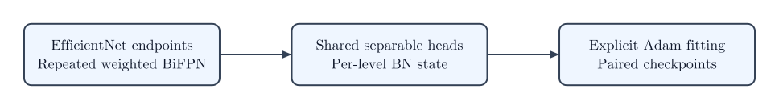
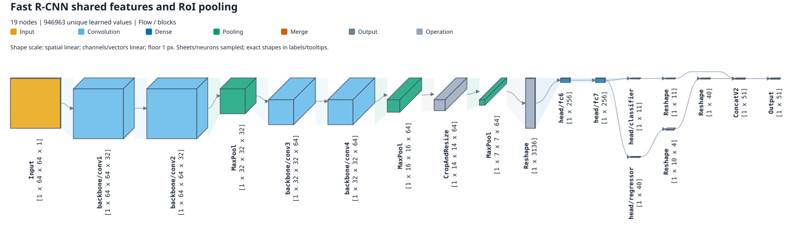
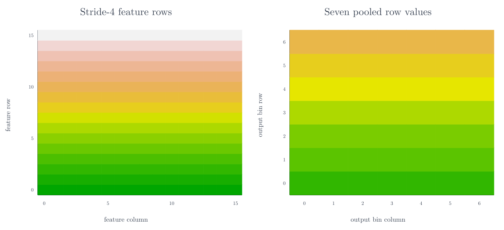
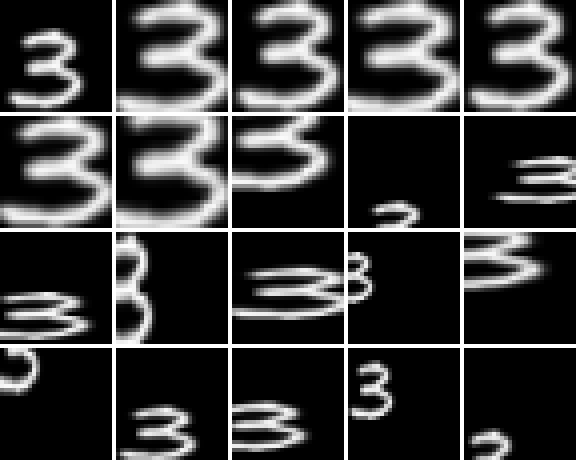
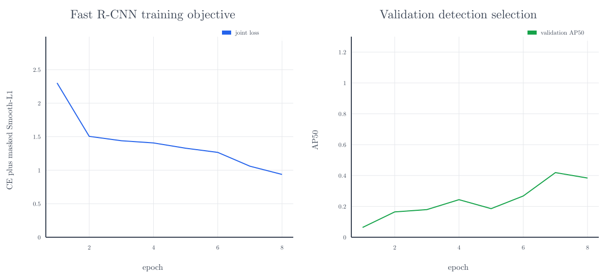
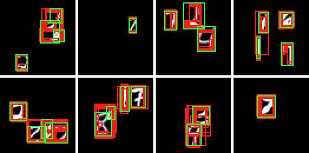

Fast R-CNN shared features and RoI pooling
Abstract
A region-based detector can waste most of its work repeating convolutions on overlapping image patches. This report shares a tensor backbone across proposals, checks the source bilinear RoI-pooling geometry, exposes region sampling and the full joint Adam loop, then evaluates the validation-selected detector on held-out scenes.
Source example: examples/cpp/source/nn/1_convolutional_neural_networks/1.6_object_detection/fast_rcnn.cpp.
The method
Fast R-CNN separates image-wide convolution from per-region pooling and dense prediction. A softmax head and class-specific box head share the pooled features and a multitask objective. The compact source adaptation below uses four convolutions and bilinear14x14 sampling followed by7x7 max pooling, rather than the original large pretrained backbone and rounded RoI bins.
The concept diagram below is drawn by dm::graphics::Diagram. Its editable C++
source is the complete block below; regeneration uses the same datamunge toolchain
as the numerical examples. Exports consume the saved local SVG.
#include <dm/dm.hpp>
int main() {
std::filesystem::create_directories("build");
dm::graphics::Diagram diagram;
diagram.node("n0", {0.0, 0}, "One image backbone\nShared stride-4 maps");
diagram.node("n1", {5.2, 0}, "Pool many regions\nClass and box heads");
diagram.node("n2", {10.4, 0}, "Joint Adam fitting\nValidation-selected AP");
diagram.edge("n0", "n1").edge("n1", "n2");
diagram.save_svg("build/fast_rcnn_concept.svg");
}
Executed tensor architecture
One fixed ROI probes the box/class head alongside the image backbone. The diagram traces tensor prediction branches; proposal selection and NMS are discrete postprocessing.
This figure executes the inference configuration shown in the code, using a zero-valued shape probe without fitting or loading a checkpoint. Named stage boundaries group whole subgraphs where available; other nodes retain functional-layer detail. Exact batch-inclusive shapes and reachable parameter totals come from the trace. Shared linear scales map spatial dimensions and channel counts to blocks; the one-pixel visibility floor is disclosed in the legend. Labels use compact monospace text, rotate counterclockwise and sit beside their own glyphs. Arrows flow left to right; wide diagrams scroll at native size on the website.
#include <dm/dm.hpp>
int main() {
namespace n = dm::nn;
namespace m = n::models;
n::set_num_threads(2);
std::filesystem::create_directories("build");
n::ParameterStore p(17), state(18);
n::Module architecture_model(
[&](const n::Tensor& image) {
const auto features = m::StrideFourDetectionBackbone(p, image);
const auto boxes = n::tensor({0., 0., 16., 16.}, {1, 4});
const auto ids = n::zeros({1}, n::DType::Int64);
const auto head = m::DetectionRoiHead(p, features, boxes / 64., ids);
return n::concat({head.logits.reshape({1, -1}), head.deltas.reshape({1, -1})}, 1);
},
"Fast R-CNN shared features and RoI pooling");
n::ModelPlotOptions options;
options.style = n::ModelPlotStyle::Flow;
options.detail = n::ModelPlotDetail::Blocks;
options.labels = {.type = n::ModelPlotLabel::NameAndShape, .size = 12, .wrap = 24};
options.spacing = {.layer = 24, .lane = 12, .label = 8, .margin = 20};
options.sizing.spatial_size = 96;
options.sizing.channel_size = 42;
options.sizing.minimum_extent = 1;
options.opacity = .8;
const auto diagram = architecture_model.plot(n::zeros({1, 64, 64, 1}), options);
diagram.save_svg("build/fast_rcnn_architecture.svg");
std::print(
"{} displayed nodes; {} reachable learned values.\n",
diagram.nodes().size(),
diagram.parameter_count());
}19 displayed nodes; 946963 reachable learned values.

Simple example: one shared feature grid, many RoIs
R-CNN repeats convolution on every proposed image patch. Fast R-CNN computes a
feature map once per image and samples each region from that map. At stride s,
feature cell i has pixel centre s*i+s/2; a pixel edge p maps to feature coordinate
(p-s/2)/s, then divides by feature_side-1 for normalized corner-aligned sampling.
The source uses bilinear crop_and_resize to 14x14 followed by 2x2 max pooling
to 7x7. This is an explicit adaptation of rounded-bin RoI pooling, and is not
ROIAlign. For a feature channel holding its row coordinate, the max in output
bin i selects sample y0+(2*i+1)*(y1-y0)/13. The same holds for columns.
Core sampling differentiates the feature map, while RoI coordinates are constants.
#include <dm/dm.hpp>
int main() {
namespace n = dm::nn;
const auto yy = n::arange(0, 16).reshape({16, 1}) * n::ones({16, 16}),
xx = n::arange(0, 16).reshape({1, 16}) * n::ones({16, 16});
const auto features = n::stack({yy, xx}, 2).reshape({1, 16, 16, 2});
const auto rois =
n::models::DetectionFeatureBoxes(n::tensor({8., 12., 40., 36.}, {1, 4}), 4, 16, 16);
const auto pooled =
n::max_pool2d(n::crop_and_resize(features, rois,
n::from_vector(std::vector<std::int64_t>{0}), {14, 14}),
2, 2, n::Padding::Valid);
double error = 0;
for (int i = 0; i < 7; ++i)
for (int j = 0; j < 7; ++j) {
error =
std::max(error, std::abs(pooled.at({0, i, j, 0}) - (1.5 + (2 * i + 1) * 8. / 13.)));
error =
std::max(error, std::abs(pooled.at({0, i, j, 1}) - (2.5 + (2 * j + 1) * 6. / 13.)));
}
if (error > 2e-6)
return 1;
auto a = n::plot_tensor_map(n::reverse(yy, {0}), 0, 15);
a.title("Stride-4 feature rows")
.x_label("feature column")
.y_label("feature row")
.x_limits(-.5, 15.5)
.y_limits(-.5, 15.5);
auto b = n::plot_tensor_map(n::reverse(n::slice_axis(pooled, 3, 0, 1).reshape({7, 7}), {0}),
0, 15);
b.title("Seven pooled row values")
.x_label("output bin column")
.y_label("output bin row")
.x_limits(-.5, 6.5)
.y_limits(-.5, 6.5);
std::filesystem::create_directories("build");
dm::graphics::RLayout::create(1, 2).add(a).add(b).size(1200, 550).fit_panels().save_svg(
"build/fast_rcnn_pooling.svg");
std::print(
"Pixels [8,40)x[12,36) map to feature rows 1.5..9.5 and columns 2.5..8.5. All 98 pooled "
"coordinate values agree with the odd-sample maximum formula; maximum error {:.9f}.\n",
error);
}Pixels [8,40)x[12,36) map to feature rows 1.5..9.5 and columns 2.5..8.5. All 98 pooled coordinate values agree with the odd-sample maximum formula; maximum error 0.000000880.

Scene data and foreground/background region sampling
This bounded fit uses 64 training and 16 validation scenes generated from the first 2048 official MNIST training digits, seed 11. Eight test scenes use the first 512 official test digits, seed 22. All scenes are 64x64, with tight boxes above byte value 32. Classical proposals use thresholds 48, 64, 96, 128, 160, 200 and 230, including nearby component-pair unions, as in the R-CNN report. The repeated images below show the actual truth/proposal geometry.
#include <dm/dm.hpp>
int main() {
namespace n = dm::nn;
namespace m = n::models;
n::set_num_threads(2);
std::filesystem::path cache;
if (const auto *p = std::getenv("DATAMUNGE_DATA_DIR"))
cache = p;
else if (const auto *p = std::getenv("XDG_CACHE_HOME"))
cache = std::filesystem::path(p) / "datamunge/datasets";
else
cache = std::filesystem::path(std::getenv("HOME")) / ".cache/datamunge/datasets";
dm::datasets::fetch("mnist", (cache / "mnist").string());
const auto train = n::load_mnist((cache / "mnist").string(), "train");
n::models::DetectionSceneConfig cfg;
cfg.scenes = 80;
cfg.seed = 11;
const auto scenes = n::models::MakeTensorDetectionScenes(
n::slice_axis(train.images, 0, 0, 2048), n::slice_axis(train.labels, 0, 0, 2048), cfg);
const auto images = n::slice_axis(scenes.images, 0, 0, 4);
std::vector<n::Tensor> truth(scenes.boxes.begin(), scenes.boxes.begin() + 4), proposals;
for (int image = 0; image < 4; ++image)
proposals.push_back(m::ComponentDetectionProposals(
n::slice_axis(images, 0, image, image + 1).reshape({64, 64, 1}),
{48, 64, 96, 128, 160, 200, 230}, 3));
std::filesystem::create_directories("build");
n::save_image_grid(n::concat({m::DrawDetectionBoxes(images, truth, {.1, 1, .2}),
m::DrawDetectionBoxes(images, proposals, {1, .1, .1})},
0),
"build/fast_rcnn_proposals.png", 4, 0., 1., 4, 1., 2);
std::print("Top: first four training scenes with green truth boxes. Bottom: identical "
"pixels with all tight-threshold red proposals, including pair unions.\n");
}Top: first four training scenes with green truth boxes. Bottom: identical pixels with all tight-threshold red proposals, including pair unions.

For each training image, the tensor sampler appends ground-truth boxes and
64 random boxes, then shuffles foreground, near background and far background
separately. Foreground has IoU at least .5, near background lies in [.1,.5),
and far background is below .1. It takes *up to* sixteen foreground regions,
then fills the 64-region budget with near and far background. Scarce positives
are not repeated. Tensor RNG replaces the source host RNG and has a different
sequence. Every foreground region receives box-regression targets here, unlike
R-CNN's separate .6 regression cutoff.
The gallery resamples the first twenty selected *image* regions only for inspection. The model instead pools their shared features as shown above.
#include <dm/dm.hpp>
int main() {
namespace n = dm::nn;
namespace m = n::models;
n::set_num_threads(2);
std::filesystem::path cache;
if (const auto *p = std::getenv("DATAMUNGE_DATA_DIR"))
cache = p;
else if (const auto *p = std::getenv("XDG_CACHE_HOME"))
cache = std::filesystem::path(p) / "datamunge/datasets";
else
cache = std::filesystem::path(std::getenv("HOME")) / ".cache/datamunge/datasets";
dm::datasets::fetch("mnist", (cache / "mnist").string());
const auto train = n::load_mnist((cache / "mnist").string(), "train");
m::DetectionSceneConfig cfg;
cfg.scenes = 80;
cfg.seed = 11;
const auto scenes = m::MakeTensorDetectionScenes(
n::slice_axis(train.images, 0, 0, 2048), n::slice_axis(train.labels, 0, 0, 2048), cfg);
std::vector<n::Tensor> candidates;
for (int i = 0; i < 2; ++i)
candidates.push_back(m::ComponentDetectionProposals(
n::slice_axis(scenes.images, 0, i, i + 1).reshape({64, 64, 1}),
{48, 64, 96, 128, 160, 200, 230}, 3));
n::Generator rng(7);
const auto batch = m::SampleDetectionRois(scenes, {0, 1}, candidates, rng);
const auto preview = m::CropDetectionPatches(n::slice_axis(scenes.images, 0, 0, 2),
n::slice_axis(batch.indices, 0, 0, 20),
n::slice_axis(batch.pixels, 0, 0, 20));
n::save_image_grid(preview, "build/fast_rcnn_sampled_rois.png", 5, 0., 1., 4, 1., 4);
std::print("{} sampled regions from two images; {} foreground, at most 16 per image. First "
"twenty labels:",
batch.labels.numel(), n::count_nonzero(batch.mask).item());
for (auto label : n::slice_axis(batch.labels, 0, 0, 20).to_vector<int>())
std::print(" {}", label);
std::print(". These image crops are presentation only; the head pools features.\n");
}128 sampled regions from two images; 14 foreground, at most 16 per image. First twenty labels: 3 3 3 3 3 3 3 10 10 10 10 10 10 10 10 10 10 10 10 10. These image crops are presentation only; the head pools features.

Explicit end-to-end tensor optimization
The source backbone has four SAME 3x3 ReLU convolutions, widths 32/32/64/64, with two 2x2 pools, giving 16x16x64 features and 64992 learned scalars. Each pooled 7x7x64 region passes through two 256-unit ReLU dense layers, then eleven class scores and ten four-offset regressors. The complete model has 946963 learned scalars and no moving state, normalization layers, dropout or pretrained weights.
The visible loop constructs all leaves before Adam, uses .001 learning rate,
two images per minibatch and eight epochs (256 updates, kept short so the report runs
quickly). Each step samples at most 128 RoIs, computes the backbone once for each image,
and minimizes mean region CE plus masked summed-coordinate Smooth-L1, with .00005*sum(kernel²) added explicitly.
Biases are excluded from L2. The best validation inclusive VOC AP50 selects the
checkpoint; ties keep the earlier epoch. Validation/test inference uses every
classical proposal and no appended truth or random sampling.
#include <dm/dm.hpp>
int main() {
namespace n = dm::nn;
namespace m = n::models;
n::set_num_threads(2);
std::filesystem::path cache;
if (const auto *p = std::getenv("DATAMUNGE_DATA_DIR"))
cache = p;
else if (const auto *p = std::getenv("XDG_CACHE_HOME"))
cache = std::filesystem::path(p) / "datamunge/datasets";
else
cache = std::filesystem::path(std::getenv("HOME")) / ".cache/datamunge/datasets";
dm::datasets::fetch("mnist", (cache / "mnist").string());
const auto train = n::load_mnist((cache / "mnist").string(), "train");
m::DetectionSceneConfig cfg;
cfg.scenes = 80;
cfg.seed = 11;
const auto scenes = m::MakeTensorDetectionScenes(
n::slice_axis(train.images, 0, 0, 2048), n::slice_axis(train.labels, 0, 0, 2048), cfg);
std::vector<n::Tensor> candidates;
for (int i = 0; i < 80; ++i)
candidates.push_back(m::ComponentDetectionProposals(
n::slice_axis(scenes.images, 0, i, i + 1).reshape({64, 64, 1}),
{48, 64, 96, 128, 160, 200, 230}, 3));
std::vector<std::int64_t> fit_rows(64), val_rows(16);
std::iota(fit_rows.begin(), fit_rows.end(), 0);
std::iota(val_rows.begin(), val_rows.end(), 64);
n::ParameterStore p(17);
{
n::NoGradGuard guard;
const auto f = m::StrideFourDetectionBackbone(p, n::zeros({1, 64, 64, 1}));
m::DetectionRoiHead(p, f, n::tensor({0., 0., 1., 1.}, {1, 4}),
n::from_vector(std::vector<std::int64_t>{0}));
}
if (p.count() != 946963)
return 1;
// Model inference borrows p for this main scope; every numerical stage is tensor based.
const auto detect = [&](const m::TensorDetectionScenes &data,
const std::vector<std::int64_t> &rows,
const std::vector<n::Tensor> &boxes) {
n::NoGradGuard guard;
const auto features = m::StrideFourDetectionBackbone(
p, 2. * n::gather(data.images, n::from_vector(rows)) - 1.);
const auto packed = m::PackDetectionRois(boxes);
if (!packed.indices.numel())
return m::SuppressDetectionCandidates(n::zeros({0, 4}), n::zeros({0}),
n::zeros({0}, n::DType::Int64),
n::zeros({0}, n::DType::Int64));
const auto head = m::DetectionRoiHead(p, features, packed.rois, packed.indices);
return m::DecodeDetectionRoiOutputs(head, packed.pixels,
n::gather(n::from_vector(rows), packed.indices));
};
// Record conversion only presents existing tensor annotations; it performs no box arithmetic.
const auto truth_records = [](const m::TensorDetectionScenes &data,
const std::vector<std::int64_t> &rows) {
std::vector<m::DetectionEvaluationTruth> truth;
for (auto i : rows) {
const auto boxes = n::boxes_to_vector(data.boxes[i]);
const auto labels = data.labels[i].to_vector<int>();
for (std::size_t j = 0; j < boxes.size(); ++j)
truth.push_back({int(i), labels[j], boxes[j]});
}
return truth;
};
std::vector<n::Tensor> val_candidates;
for (auto row : val_rows)
val_candidates.push_back(candidates[row]);
const auto val_truth = truth_records(scenes, val_rows);
std::vector<int> val_ids(val_rows.begin(), val_rows.end());
n::OptimizerConfig config;
config.kind = n::OptimizerKind::Adam;
n::Optimizer adam(p, .001, config);
n::BatchOrder order(64, 2, 29);
n::Generator sampling(7);
std::vector<n::Tensor> kernels;
for (const auto &v : p.parameters())
if (v.dim() >= 2)
kernels.push_back(v);
std::filesystem::create_directories("build");
const std::string checkpoint = "build/fast_rcnn_best.npz";
std::vector<double> epochs, losses, validation;
double best = -1;
int selected = 0, steps = 0;
std::print("| epoch | sampled training joint loss | validation AP50 |\n|---:|---:|---:|\n");
for (int epoch = 1; epoch <= 8; ++epoch) {
order.begin_epoch();
double total = 0;
std::size_t seen = 0;
for (auto rows = order.next(); !rows.empty(); rows = order.next()) {
std::vector<n::Tensor> boxes;
for (auto row : rows)
boxes.push_back(candidates[row]);
const auto batch = m::SampleDetectionRois(scenes, rows, boxes, sampling);
const auto features = m::StrideFourDetectionBackbone(
p, 2. * n::gather(scenes.images, n::from_vector(rows)) - 1.);
const auto head = m::DetectionRoiHead(p, features, batch.rois, batch.indices);
const auto joint = m::DetectionRoiLoss(head, batch.labels, batch.targets, batch.mask);
n::Tensor penalty = n::zeros({});
for (const auto &kernel : kernels)
penalty = penalty + n::sum(n::square(kernel));
if (!std::isfinite(joint.item()))
return 1;
total += joint.item() * rows.size();
seen += rows.size();
adam.minimize(joint + .00005 * penalty);
++steps;
}
const auto prediction = detect(scenes, val_rows, val_candidates);
const auto metric = m::EvaluateDetectionDataset(m::DetectionEvaluationRecords(prediction),
val_truth, val_ids, false, true);
epochs.push_back(epoch);
losses.push_back(total / double(seen));
validation.push_back(metric.ap50.item());
if (metric.ap50.item() > best) {
best = metric.ap50.item();
selected = epoch;
p.save(checkpoint);
}
std::print("| {} | {:.6f} | {:.6f} |\n", epoch, losses.back(), validation.back());
}
p.load(checkpoint);
const auto restored = m::EvaluateDetectionDataset(
m::DetectionEvaluationRecords(detect(scenes, val_rows, val_candidates)), val_truth,
val_ids, false, true);
if (std::abs(restored.ap50.item() - best) > 1e-12)
return 1;
const auto digits = n::load_mnist((cache / "mnist").string(), "test");
cfg.scenes = 8;
cfg.seed = 22;
const auto test = m::MakeTensorDetectionScenes(n::slice_axis(digits.images, 0, 0, 512),
n::slice_axis(digits.labels, 0, 0, 512), cfg);
std::vector<std::int64_t> test_rows(8);
std::iota(test_rows.begin(), test_rows.end(), 0);
std::vector<int> test_ids(test_rows.begin(), test_rows.end());
std::vector<n::Tensor> test_candidates;
double covered50 = 0, covered70 = 0;
std::int64_t count = 0;
for (int i = 0; i < 8; ++i) {
const auto boxes = m::ComponentDetectionProposals(
n::slice_axis(test.images, 0, i, i + 1).reshape({64, 64, 1}),
{48, 64, 96, 128, 160, 200, 230}, 3);
test_candidates.push_back(boxes);
count += boxes.shape()[0];
if (boxes.shape()[0] && test.boxes[i].shape()[0]) {
const auto overlap = n::max(n::box_iou(boxes, test.boxes[i]), {0});
covered50 += n::count_nonzero(n::greater_equal(overlap, .5)).item();
covered70 += n::count_nonzero(n::greater_equal(overlap, .7)).item();
}
}
const auto output = detect(test, test_rows, test_candidates);
const auto records = m::DetectionEvaluationRecords(output);
const auto truth = truth_records(test, test_rows);
const auto voc = m::EvaluateDetectionDataset(records, truth, test_ids, false, true),
coco = m::EvaluateDetectionDataset(records, truth, test_ids, true);
// Preserve the exact evaluated boxes and scores for an independent AP recount.
std::vector<double> saved_predictions, saved_truth;
for(const auto& detection:records){saved_predictions.insert(saved_predictions.end(),{double(detection.image),double(detection.label),double(detection.score),double(detection.box[0]),double(detection.box[1]),double(detection.box[2]),double(detection.box[3])});}
for(const auto& target:truth){saved_truth.insert(saved_truth.end(),{double(target.image),double(target.label),double(target.box[0]),double(target.box[1]),double(target.box[2]),double(target.box[3]),double(target.difficult),double(target.crowd)});}
n::save_npz("build/fast_rcnn_detections_"+std::string("0")+".npz",{{"predictions",n::from_vector(saved_predictions,{std::int64_t(records.size()),7})},{"truth",n::from_vector(saved_truth,{std::int64_t(truth.size()),8})},{"images",n::from_vector(test_ids)},{"metrics",n::stack({voc.ap50,coco.ap75,coco.ap},0)}});
// Group integer output row indices to draw the actual selected predictions.
std::vector<n::Tensor> predicted_boxes;
const auto image_ids = output.images.to_vector<int>();
for (int image = 0; image < 8; ++image) {
std::vector<std::int64_t> index;
for (std::size_t j = 0; j < image_ids.size(); ++j)
if (image_ids[j] == image)
index.push_back(std::int64_t(j));
predicted_boxes.push_back(n::gather(output.boxes, n::from_vector(index)));
}
const auto green = m::DrawDetectionBoxes(test.images, test.boxes, {.1, 1., .2}),
red = m::DrawDetectionBoxes(test.images, predicted_boxes, {1., .1, .1}),
raw = test.images * n::ones({1, 1, 1, 3});
const auto sheet = n::where(n::any(n::not_equal(green, raw), {3}, true), green, red);
n::save_image_grid(sheet, "build/fast_rcnn_detections.png", 4, 0., 1., 4, 1., 2);
std::filesystem::create_directories("figures");
std::filesystem::copy_file("build/fast_rcnn_detections.png",
"figures/fast_rcnn_detections.png",
std::filesystem::copy_options::overwrite_existing);
auto a = dm::graphics::RPlot::create();
a.lines(epochs, losses, "joint loss", {37, 99, 235})
.title("Fast R-CNN training objective")
.x_label("epoch")
.y_label("CE plus masked Smooth-L1")
.y_limits(0, 1.3 * *std::max_element(losses.begin(), losses.end()));
auto b = dm::graphics::RPlot::create();
b.lines(epochs, validation, "validation AP50", {22, 163, 74})
.title("Validation detection selection")
.x_label("epoch")
.y_label("AP50")
.y_limits(0, 1.3);
dm::graphics::RLayout::create(1, 2).add(a).add(b).size(1200, 550).fit_panels().save_svg(
"build/fast_rcnn_training.svg");
std::print("{} learned scalars, {} Adam updates; selected epoch {}, validation AP50 {:.6f}. "
"Test: {} scenes, {} digits, {:.3f} proposals/image, proposal recall .5/.7 "
"{:.6f}/{:.6f}; inclusive VOC AP50 {:.6f}, COCO AP75 {:.6f}, AP50:95 {:.6f}; {} "
"detections. One shared backbone evaluation per image; no moving state.\n",
p.count(), steps, selected, best, 8, truth.size(), double(count) / 8.,
covered50 / truth.size(), covered70 / truth.size(), voc.ap50.item(),
coco.ap75.item(), coco.ap.item(), records.size());
}| epoch | sampled training joint loss | validation AP50 |
|---|---|---|
| 1 | 2.302032 | 0.063453 |
| 2 | 1.505040 | 0.164183 |
| 3 | 1.439723 | 0.179058 |
| 4 | 1.406953 | 0.243485 |
| 5 | 1.328160 | 0.185316 |
| 6 | 1.265856 | 0.267411 |
| 7 | 1.059902 | 0.418937 |
| 8 | 0.936915 | 0.383549 |
946963 learned scalars, 256 Adam updates; selected epoch 7, validation AP50 0.418937. Test: 8 scenes, 23 digits, 15.625 proposals/image, proposal recall .5/.7 0.869565/0.739130; inclusive VOC AP50 0.573580, COCO AP75 0.337367, AP50:95 0.349365; 206 detections. One shared backbone evaluation per image; no moving state.


Regenerate adjacent views from this run
#include <dm/dm.hpp>
int main(){std::filesystem::copy_file("build/fast_rcnn_detections.png","build/export_fast_rcnn_detections.png",std::filesystem::copy_options::overwrite_existing);}Conclusion
The executed results above describe the current selected checkpoint and its held-out detection quality. Small scene sets and bounded schedules do not establish architecture rankings. Inspect localization, missed targets and false positives together with validation selection and the actual prediction gallery.
The coordinate fixture verifies shared-grid RoI pooling before fitting. Actual scene/region previews, explicit foreground/background sampling and the complete tensor optimizer loop make the data and objective inspectable. Held-out AP uses the selected detector with classical proposals only. Sharing convolution changes the computation structure; this bounded example does not claim the paper's speed or benchmark accuracy.
References
- [Girshick (2015), Fast R-CNN](https://arxiv.org/abs/1504.08083).
- [Girshick et al. (2014), R-CNN](https://arxiv.org/abs/1311.2524).
- [TensorFlow, crop_and_resize semantics](https://www.tensorflow.org/api_docs/python/tf/image/crop_and_resize).